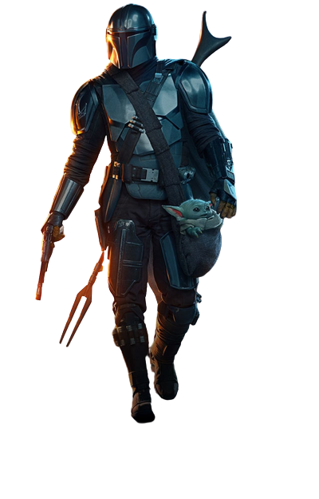
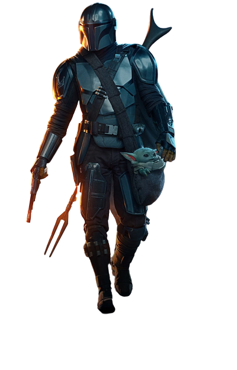
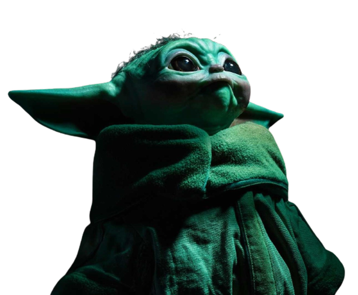

Beginning five years after the events of Return of the Jedi (1983) and the fall of the Galactic Empire,[1][2] The Mandalorian follows Din Djarin, a lone Mandalorian bounty hunter in the outer reaches of the galaxy.[2] He is hired by remnant Imperial forces to retrieve the child Grogu, but instead goes on the run to protect the infant. While looking to reunite Grogu with his kind, they are pursued by Moff Gideon, who wants to use Grogu's connection to the Force.The duo then travel to Mandalore so Din Djarin can redeem himself for the transgression of removing his helmet.

Grogu, known to many simply as "the Boy", was a Jedi Initiate and Force-sensitive Mandalorian foundling who belonged to the same species as Jedi Grandmaster Yoda and Jedi Master Yaddle. Grogu was born around 41 ABY, and was raised in the Jedi Temple on Coruscant.
- 